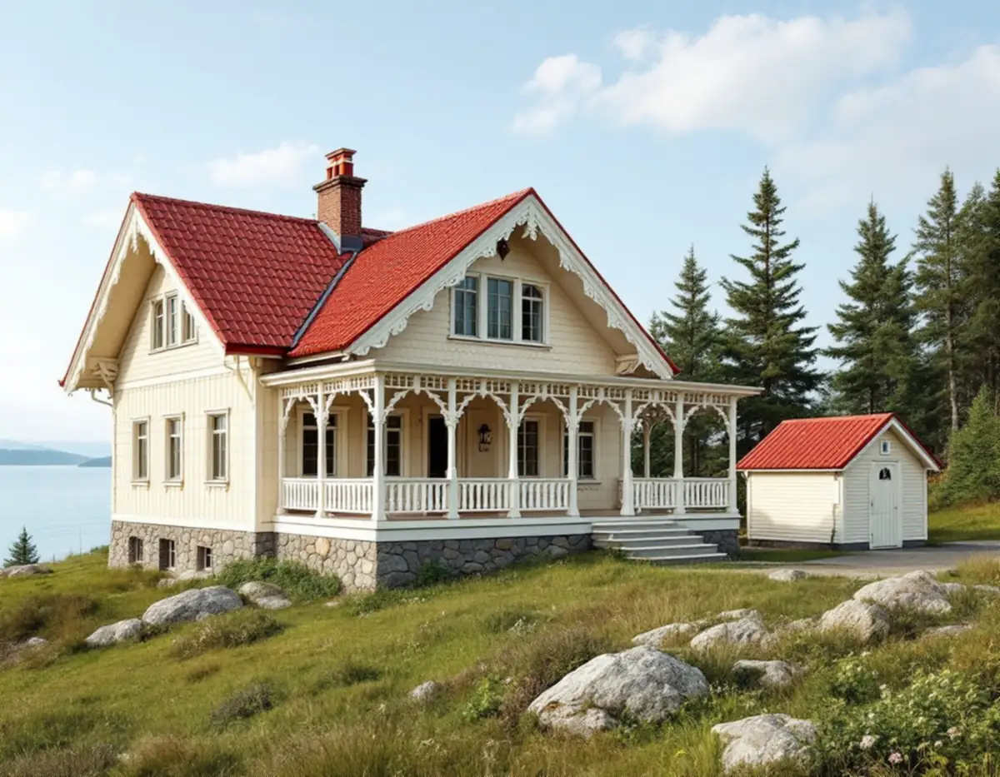
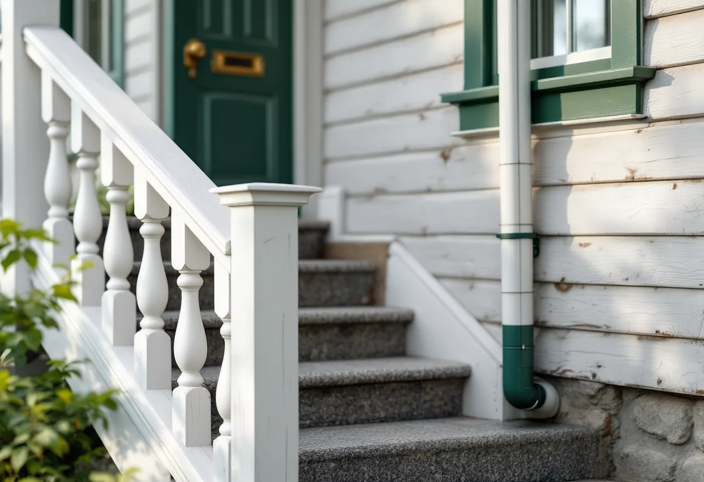

Platsbesök
Vi går igenom huvudbyggnad, uthus, räcken, trappor, plåt och fönster.

Fasaden är sällan det enda som ska målas.
Beskriv jobbet kort.
Något blev fel. Kontrollera uppgifterna eller ring 08 12 410 276.
Vi tittar på jobbet på plats innan du får offert.
Du ser vad som ingår och vad det kostar.
Vi drar av ROT direkt och sköter ansökan.
Geal Entreprenad AB, Bromma. Org.nr 559303-7566.

Kring en äldre villa i Nacka står ofta ett uthus, en gäststuga eller ett garage, och på huset sitter räcken, trappor och plåtdetaljer som slits fortare än panelen. Geal Entreprenad AB målar fasader i Nacka och tar med de delarna i samma planering.
Nacka kommuns kulturmiljöprogram om sommarnöjena vid farleden beskriver hur ljusmålad panel dominerar på de äldre sommarvillorna, med tegel eller plåt på taken. Rejäla stensocklar, resliga fönster och utskjutande taksprång räknas också till de bevarandevärda dragen. Programmet råder att befintliga hus respekteras i proportioner, fasadfärg och tak, men också i byggnadsdetaljer som fönster, panel, utsmyckningar, entréer och räcken.
Vid Hasseludden ligger Gustafshäll, en sommarvilla från 1860-talet som är byggnadsminne, och där kräver åtgärder tillstånd av Länsstyrelsen. Villa Torpa från 1883 beskrivs som en påkostad schweizervilla med rika utsirningar och takkonsoler. De stuglika fritidshusen från 1900-talet har i stället enkel arkitektur och en naturanpassad färgsättning. Gemensamt för dem alla är att det är detaljerna runt fasaden som ger helheten.
Komplementbyggnader ska enligt programmet underordnas huvudbyggnaden och tomtbilden. En enkel färgsättning, med knutar och foder i en färg som liknar fasadens, kan då vara lämplig. För ett garage, en gäststuga eller ett uthus på tomten innebär det en färgsättning som inte konkurrerar med villan.
Nacka kommun skriver att det inom detaljplan inte längre krävs bygglov för fasadändringar på en- eller tvåbostadshus, komplementbyggnader eller komplementbostadshus, men att åtgärden inte får strida mot detaljplanen. Byte av färg räknas som en fasadändring. Ligger fastigheten i ett område som kommunen bedömt som särskilt kulturhistoriskt värdefullt utökas lovplikten, och då krävs bygglov för fasadändringar som påverkar områdets eller byggnadens karaktär. Kommunens karta visar vilka områden det gäller. Kulturmiljöprogrammet nämner också att stora delar av området kring Hasseludden har detaljplaner med utökad lovplikt för omfärgning och fasadunderhåll. Innan uthuset får en ny kulör läser vi därför detaljplanen och kartan för fastigheten, och vi stryker det med samma färgtyp som det redan har.
Riksantikvarieämbetets handbok om byggnadsmåleri räknar upp fönster, vattbräder, trappor, räcken, utvändig utsmyckning, plåttak och rännor som delar som bör underhållsmålas löpande. De är hårt utsatta för väder och vind, och där har färgen en direkt skyddande funktion. Väntar man för länge riskerar underlaget att ta skada.
Linoljefärg användes förr på de flesta underlag, även plåt och gjutjärn, och efterfrågan på linoljefärg för utomhusbruk på trä och plåt har enligt handboken ökat igen. Därför går vi vid platsbesöket igenom vilken färgtyp varje detalj har i dag. Ett räcke eller en trappa som har målats med linoljefärg fortsätter vi med linolja, och plåt som har en annan färg får en färg som passar den. Vi bättrar hellre i tid än låter rosten eller rötan ta fäste.
Fönster behöver i regel målas om oftare än fasaden, och handboken påpekar att sido- och bottenstycken regelbundet måste ses över och att fönsterkittet ska vara helt så att fukt inte tränger in och orsakar röta. Fönstersnickerierna rengörs bäst med sodatvätt för hand, löst kitt tas bort och blottade kittfalsar grundas innan de kittas. Grundningen hindrar kittet från att torka ut och spricka. Även ytterbågens insida ska strykas med utomhusfärg.
Står ställningen ändå uppe är det rimligt att ta fönstren samtidigt. Mer om de äldre trähusen och lovplikten i kommunen finns under målare i Nacka, om socklar och panel under fasadrenovering i Nacka och om färgtyper i stort under målare.
Vi går igenom huvudbyggnad, uthus, räcken, trappor, plåt och fönster.
Vi kontrollerar vad planen säger om kulör och utförande för fastigheten.
Fasad, uthus, plåt och fönster står som egna poster.
Panel, fönster och detaljer tvättas, och lös färg skrapas bort.
Varje del får den färgtyp och det antal strykningar som underlaget kräver.
Vi går runt tomten med dig och bättrar det som behövs.
Skatteverket ger rotavdrag för att måla fasader på ett småhus och för att montera och montera ner ställningen. Även reparation och byte av fönster ger avdrag. Skatteverket ger däremot inte avdrag för bostäder som hyrs ut, så en gäststuga som hyrs ut till andra räknas inte.
Avdraget är 30 procent av arbetskostnaden, högst 50 000 kr per person och år och högst 75 000 kr tillsammans med rutavdrag. Färg, material och resor ger inget avdrag. Avdraget görs direkt på fakturan.
Hur många byggnader och detaljer som ingår, hur mycket räcken, plåt och fönster som ska målas och hur ställningen kan stå i den ofta kuperade terrängen väger tyngst. Efter ett kostnadsfritt platsbesök får du ett skriftligt kostnadsförslag.
Fasad, fönster och invändig målning.
Målare i Stockholm →Takbyte, takbesiktning och plåtarbeten.
Takläggare i Nacka →Saltsjöbaden, Boo och Älta.
Takrenovering i Nacka →Saltsjöbanan, kommunens mark och kulturkartan.
Attefallshus i Nacka →VA, LTA och dagvatten på tomten.
Byggföretag i Nacka →Villastäder, sommarhus och radhus.
Badrumsrenovering i Nacka →Sommarvillor, stugor och villor i Nacka.
Fasadrenovering i Nacka →Villasamhällena vid Saltsjöbanan.
Fönsterbyte i Nacka →Linoljefärg, väder och verkstad för villafönster.
Fönsterrenovering i Nacka →Sommarvillor, stugor och hus med källarplan.
Golvläggare i Nacka →Slipa och olja trägolvet.
Golvslipning i Nacka →Radhuskök, sekelskiftesvillor och vedspis.
Köksrenovering i Nacka →Panelvillor och sommarnöjen i Nacka.
Målare i Nacka →Farledens plåttak och Saltsjöbadens villor.
Plåtslagare i Nacka →Verandor, panel och altaner.
Snickare i Nacka →Skorsten, huvar och genomföringar vid nytt tak.
Takbyte i Nacka →Ny tapet och dold dekor i äldre villor.
Tapetsering i Nacka →Strandskydd och villasamhällen.
Tillbyggnad i Nacka →Nytt värmesystem när huset ändå görs om.
Totalrenovering i Nacka →Eller ring 08 12 410 276, mån–fre 08–17.
Beskriv jobbet kort.
Något blev fel. Kontrollera uppgifterna eller ring 08 12 410 276.